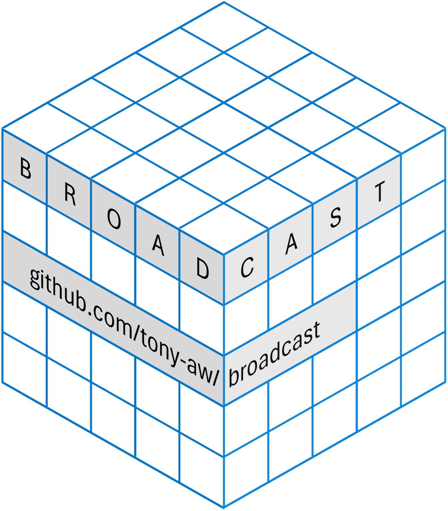

(x <- array(1:12, c(3, 4)))
#> [,1] [,2] [,3] [,4]
#> [1,] 1 4 7 10
#> [2,] 2 5 8 11
#> [3,] 3 6 9 12
(y <- array(1:4 * 100, c(1, 4)))
#> [,1] [,2] [,3] [,4]
#> [1,] 100 200 300 400

 -package ‘broadcast’: Broadcasted Array Operations Like ‘NumPy’
-package ‘broadcast’: Broadcasted Array Operations Like ‘NumPy’


Introduction
Overview
‘broadcast’ is an efficient ‘C’/‘C++’ - based package that, as the name suggests, performs “array broadcasting” (similar to broadcasting in the ‘Numpy’ module for ‘Python’).
In the context of operations involving 2 (or more) arrays, “broadcasting” refers to efficiently recycling array dimensions, without making copies.
This is considerably faster and more memory-efficient than R’s regular dimensions replication mechanism.
Key Features (click on the 🔍 to show or hide):
Broadcasted Infix Operators 🔍
Consider computing the addition of these arrays x and y:
This cannot be done efficiently in base ‘R’; it can be done fast and memory-efficiently with the ‘broadcast’ package:
x + y
Error in x + y : non-conformable arrays
# You *could* do the following....
x + y[rep(1L, 3L),]
# ... but if x or y is very large:
Error: cannot allocate vector of sizebroadcaster(x) <- TRUE
broadcaster(y) <- TRUE
x + y
#> [,1] [,2] [,3] [,4]
#> [1,] 101 204 307 410
#> [2,] 102 205 308 411
#> [3,] 103 206 309 412
#> broadcaster‘broadcast’ supports a wide range of infix operators, including arithmetic-, relational-, Boolean- string- and bit-wise operators.
Broadcasted Array Binding 🔍
Using broadcasting, bind_array() from the ‘broadcast’ package can bind arrays together in ways that cannot efficiently be done with rbind(), cbind(), or abind::abind(). Consider, for example, column-binding these arrays x and y:
(x <- array(1:12, c(3, 4)))
#> [,1] [,2] [,3] [,4]
#> [1,] 1 4 7 10
#> [2,] 2 5 8 11
#> [3,] 3 6 9 12
(y <- array(1:4 * 100, c(1, 4)))
#> [,1] [,2] [,3] [,4]
#> [1,] 100 200 300 400This cannot be done efficiently in base ‘R’; it can be done fast and memory-efficiently with the ‘broadcast’ package:
cbind(x, y)
Error in cbind(x, y) :
number of rows of matrices must match
# You *could* do the following....
cbind(x, y[rep(1L, 3L),])
# ... but if x or y is very large:
Error: cannot allocate vector of sizebind_array(list(x, y), along = 2L)
#> [,1] [,2] [,3] [,4] [,5] [,6] [,7] [,8]
#> [1,] 1 4 7 10 100 200 300 400
#> [2,] 2 5 8 11 100 200 300 400
#> [3,] 3 6 9 12 100 200 300 400bind_array() is also considerably faster and more memory efficient than abind(). See the benchmarks.
Broadcasted General Functions 🔍
The idea of broadcasted infix operations and broadcasted array binding has been generalized to also include bcapply() (a broadcasted apply-like function), bc_ifelse() (broadcasted version of ifelse()), bc_strrep() (broadcasted version of strrep()).
Casting Methods 🔍
Broadcast provides casting functions, that cast subset-groups of an array to a new dimension, cast nested lists to dimensional lists, and vice-versa.
These functions are useful for facilitating complex broadcasted operations, though they also have much merit beside broadcasting.
For example, you cannot broadcast through hierarchies of a list, but you can broadcast along dimensions. So suppose you have the following list:
x <- list(
student1 = list(
homework1 = sample(0:100, 5),
homework2 = sample(0:100, 5),
homework3 = sample(0:100, 5)
),
student2 = list(
homework1 = sample(0:100, 5),
homework2 = sample(0:100, 5),
homework3 = sample(0:100, 5)
),
student3 = list(
homework1 = sample(0:100, 5),
homework2 = sample(0:100, 5),
homework3 = sample(0:100, 5)
)
)Since all values in the list are numbers, you might want to turn this into a numeric array, to make mathematical computations and analyses on it easier.
This can be done with the ‘broadcast’ package with the following steps. First, turn the nested list into a shallow (i.e. non-nested), dimensional list using cast_hier2dim():
x2 <- cast_hier2dim(x, in2out = FALSE, direction.names = 1L)
print(x2)
#> homework1 homework2 homework3
#> student1 integer,5 integer,5 integer,5
#> student2 integer,5 integer,5 integer,5
#> student3 integer,5 integer,5 integer,5Second, turn the shallow (i.e. non-nested), dimensional list into an atomic array using cast_shallow2atomic():
x3 <- cast_shallow2atomic(x2, 1L)
print(x3)
#> , , homework1
#>
#> student1 student2 student3
#> [1,] 67 6 73
#> [2,] 38 72 41
#> [3,] 0 78 37
#> [4,] 33 84 19
#> [5,] 86 36 27
#>
#> , , homework2
#>
#> student1 student2 student3
#> [1,] 42 88 19
#> [2,] 13 36 43
#> [3,] 81 33 86
#> [4,] 58 100 69
#> [5,] 50 43 39
#>
#> , , homework3
#>
#> student1 student2 student3
#> [1,] 96 78 43
#> [2,] 84 32 24
#> [3,] 20 83 69
#> [4,] 53 34 38
#> [5,] 73 69 50A few Linear Algebra Functions for Statistics 🔍
‘broadcast’ comes with a few linear algebra functions for statistics. For example, the sd_lc() function to compute the standard deviation of a linear combination of variables - regardless of what the distribution of the variables is.
The Quick-Start Guide can be found here.
Why use ‘broadcast’
Efficiency
Broadcasting as implemented in the ‘broadcasting’ package is about as fast as - and sometimes even faster than - NumPy.
The implementations in the ‘broadcast’ package are also much faster and much more memory efficient than using base solutions like sweep().
Efficient programs use less energy and resources, and is thus better for the environment.
Benchmarks can be found in the “About” section on the website.
Convenience
Have you ever been bothered by any of the following while programming in :
- Receiving the “non-conformable arrays” error message in a simple array operation, when it intuitively should work?
- Receiving the “cannot allocate vector of size…” error message because unnecessarily allocated too much memory in array operations?
abind::abind()being too slow, or ruining the structure of recursive arrays?- The
sweep()andouter()functions being too slow or too limiting? - that there is no array analogy to
data.table::dcast()? - difficulties in handling deeply nested lists?
- that certain ‘Numpy’ operations have no equivalent operation in ?
If you answered “YES” to any of the above, ‘broadcast’ may be the - package for you.
Minimal Dependencies
Besides linking to ‘Rcpp’, ‘broadcast’ does not depend on, vendor, link to, include, or otherwise use any external libraries; ‘broadcast’ was essentially made from scratch and can be installed out-of-the-box.
Not using external libraries brings a number of advantages:
- Avoid dependency hell.
- Avoid wasting time, memory and computing resources for translating between language structures.
- Ensure consistent behaviour with the rest of .
- Access to CRAN’s quality control (no comparable quality control organization exists for most other programming languages).
See the Other Packages page for more details on the above points regarding the advantages of minimizing dependencies.
Tested
The ‘broadcast’ package is frequently checked using a large suite of unit tests via the tinytest package. These tests have a coverage of over 95%. So the chance of a function from this package breaking completely is relatively low.
‘broadcast’ is still relatively new package, however, so (small) bugs are still very much possible. I encourage users who find bugs to report them promptly to the issues tab on the GitHub page, and I will fix them as soon as time permits.
Installation
install.packages("broadcast", type = "source")
Status
‘broadcast’ is now available on CRAN! 🎉
If you have any suggestions or feedback on the package, its documentation, or even the benchmarks, I encourage you to let me know (either as an Issue or a Discussion).
I’m eager to read your input!
Documentation
The documentation in the ‘broadcast’ website is divided into 3 main parts:
- Guides and Vignettes: contains the topic-oriented guides in the form of a few Vignettes.
- Reference Manual: contains the function-oriented reference manual.
- About: Contains the Acknowledgements, Change logs and License file. Here you’ll also find some information regarding the relationship between ‘broadcast’ and other packages/modules. Benchmarks can also be found here.